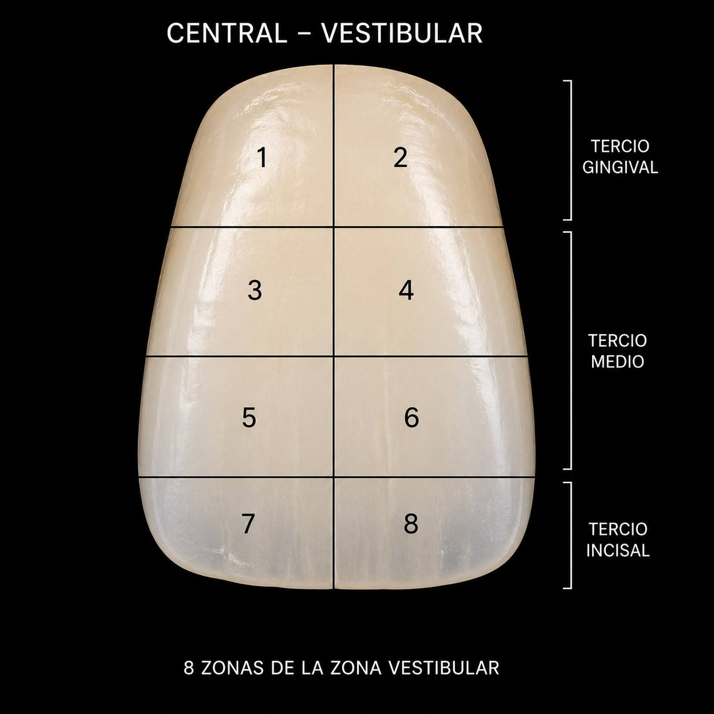

Tarjeta gris BigColor detectada
CeramIQ
By Miguel Arroyo
Chat experto de ceramica
Consulta el caso y decide mejor la ceramica.
Sube fotografias, guia, tarjeta gris y polarizada para preguntar material, estrategia optica, masas, sustrato, ajustes y recetas por tercios.
CeramIQ = Ceramic Intelligence

8 zonas vestibularesEvidencia comparativa
Objetivo vs prueba, por tercios y zonas.
CeramIQ toma una foto objetivo y una foto de prueba para calcular Delta E, revisar la coherencia del material y preparar una respuesta explicable para el caso.
2.7 objetivo vs prueba
Fotos, guia y comparativa
Paso 1
Captura clinica
Brief del caso
Que vamos a resolver
Fotos guardadas0 archivos
Arnes activo: cada foto se analiza con CeramIQ. Sin tarjeta gris, guia y polarizada, CIELAB y Delta E quedan estimados.
CeramIQ engine
Calculando mapa optico
CeramIQ revisa fotos, guia, tarjeta y polarizada antes de responder al caso.
Balance de blancos aplicado
Tercios dentales segmentados
CIELAB comparado
Respuesta ceramica generada
Resultado CeramIQ
Diagnostico optico
Delta E 2.7
Comparativa objetivo vs prueba
La restauracion esta ligeramente alta de valor en incisal y baja de croma en cervical.
IncisalObjetivo L* 81.2 a* 0.4 b* 9.8
Actual L* 84.0 a* 0.2 b* 8.2Demasiado luminoso y frio; necesita translucidez gris-azulada controlada.
MedioObjetivo L* 78.4 a* 1.8 b* 14.9
Actual L* 78.9 a* 1.5 b* 13.1Valor correcto, falta croma dentinario suave.
CervicalObjetivo L* 72.6 a* 3.2 b* 19.4
Actual L* 74.2 a* 2.2 b* 16.7Zona baja en saturacion; requiere dentina cervical mas calida.
Validacion
Evidencia del analisis
Sin analisis ejecutado
Sube fotos y pulsa analizar para generar trazabilidad.
Lectura del caso
Sube el caso para recibir una respuesta util para clase.
La respuesta quedara separada en diagnostico por tercios, riesgos de calibracion, material recomendado, estrategia optica y receta cuando proceda. Si falta guia, gris o polarizada, CeramIQ lo marcara como estimado.
Salida CeramIQ
Respuesta del caso
IPS e.max Ceram sobre sustrato ND2
Respuesta demo orientativa. Validar grosor, sustrato, cemento, material y tabla de coccion oficial antes de produccion clinica.
- IPS e.max Ceram Deep Dentin A2 - 35%Sube croma y cuerpo cervical.
- IPS e.max Ceram Dentin A2 - 20%Aporta saturacion dentinaria real del sistema.
- IPS e.max Ceram Dentin A1 - 25%Integra valor base con transicion natural.
- IPS e.max Ceram Transpa neutral - 20%Evita bloqueo opaco del margen.
- IPS e.max Ceram Dentin A1 - 38%Valor y cuerpo dentinario principal.
- IPS e.max Ceram Incisal I1 - 22%Luminosidad interna controlada.
- IPS e.max Ceram Dentin A2 - 18%Ajuste de croma medio.
- IPS e.max Ceram Transpa neutral - 22%Profundidad sin bajar valor.
- IPS e.max Ceram Opal Effect OE1 - 30%Opalescencia incisal azulada.
- IPS e.max Ceram Incisal I1 - 24%Valor alto sin efecto tiza.
- IPS e.max Ceram Transpa blue - 24%Profundidad fria del borde.
- IPS e.max Ceram Incisal I2 - 22%Detalle interno y transicion incisal.
Exportar PDF con fotos, guia, valores CIELAB, Delta E, criterio de material, receta y nivel de calibracion.
Base privada
Biblioteca CeramIQ
Masas, familias opticas y reglas por grosor.
Tarjeta gris, CIELAB trazable y control de luz.
Aprendizaje por sustrato, cemento y resultado real.
Diagnostico optico, material, limites del caso y receta por tercios.
Si falta guia, gris calibrado o polarizada, CeramIQ no declara medicion absoluta: marca el caso como estimado.